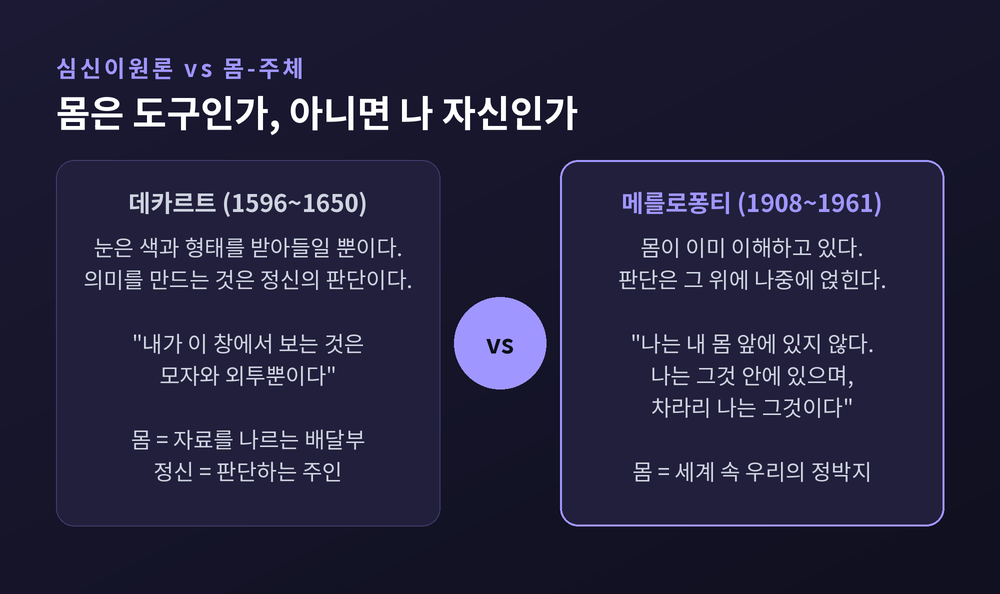

이번 글에서는 모리스 메를로퐁티(1908~1961)의 몸의 현상학을 정리해 보겠습니다.
먼저 결론부터 세 줄로 적습니다.
첫째, 그는 정신과 몸을 나눈 데카르트식 구도를 거부했습니다.
둘째, 지각은 주체와 대상이 갈라지기 이전에 몸에서 일어난다고 보았습니다.
셋째, 그래서 인간의 근본 태도는 "나는 생각한다"가 아니라 "나는 할 수 있다"입니다.
데카르트는 창밖을 내다보며 이렇게 적었습니다.
"내가 이 창에서 보는 것은 모자와 외투뿐이며, 그것은 유령이나 태엽으로만 움직이는 인형을 덮고 있을 수도 있다. 그러나 나는 그들이 실제로 사람이라고 판단하며, 따라서 나는 오직 내 정신에 있는 판단의 힘만으로, 내가 눈으로 본다고 믿었던 것을 이해한다."
눈은 얼룩덜룩한 색을 받고, 정신이 그것을 "사람"으로 판단한다는 구도입니다. 몸은 자료를 나르는 배달부이고, 의미를 만드는 것은 정신입니다.
메를로퐁티는 이 설명이 순환에 빠진다고 지적합니다. 데카르트는 이미 "모자"와 "외투"라는 의미 있는 판단에서 출발합니다. 정작 그 지각이 어떻게 의미를 갖게 되는지는 설명하지 않습니다.
인터넷 철학백과의 잭 레이놀즈는 이 대목을 두고, 데카르트의 설명이 "모자와 외투라는 유의미한 판단을 이미 전제할 뿐"이라고 짚습니다.
몸을 대상으로 만드는 순간 대가가 따릅니다. 몸이 하나의 물건이 되면, 세계도 저 바깥에 완성된 채 놓인 물건 더미가 됩니다. 그리고 그 둘 사이에는 건널 수 없는 강이 생깁니다.
스탠퍼드 철학백과는 이 귀결을 담담하게 정리합니다. 즉자의 결정론을 끝까지 밀고 가면 "결국의 귀결은 이원론, 유아론, 회의주의"라고 말입니다.

그가 처음부터 현상학자였던 것은 아닙니다.
스탠퍼드 철학백과에 따르면 1933년에 그가 제출한 연구 지원서에는 현상학이라는 말이 아예 없었습니다. 후설이 등장하는 것은 이듬해 보고서부터입니다. 그때 그는 후설 현상학이 "의식과 감각이라는 개념 자체를 개정하는 데" 유용하다고 적었습니다.
1929년 그는 후설의 소르본 강의를 직접 들었습니다. 1939년 4월에는 벨기에 루뱅에 갓 세워진 후설 아카이브의 첫 외부 방문자가 되어, 아직 출간되지 않은 『이념들 II』 원고를 열람했습니다.
후설에게서 그가 가져온 도구는 분명합니다. 음영, 작동적 지향성, 그리고 "나는 할 수 있다"라는 표현이 그렇습니다.
동시에 그는 게슈탈트 심리학에 깊이 기댔습니다. 지각의 기본 단위는 낱낱의 감각 원자가 아니라 배경 위에 떠오르는 형태라는 착상입니다.
다만 그는 게슈탈트 이론에도 그대로 머물지 않았습니다. 그 인식론적 틀이 "여전히 칸트적"이라고 보았기 때문입니다. 그는 "매우 다른 방향에서, 매우 다른 해결책을" 찾아야 한다고 썼습니다.
후설에 대해서도 마찬가지였습니다. 그는 현상학적 방법의 주지주의적 경향을 점점 더 비판했습니다. 다만 그 의도는 포기가 아니라 개혁이었다고 스탠퍼드 철학백과는 덧붙입니다.
1944년에 탈고하고 이듬해 출간한 이 책은 독특한 리듬으로 진행됩니다.
먼저 경험론의 설명을 소개합니다. 이어 그 대안인 주지주의를 소개합니다. 그리고 양쪽이 공유하는 전제를 무너뜨립니다.
그 공통 전제란 "객관적 세계가 이미 완성되어 온전히 현전하는 실재로 존재한다는 편견"입니다.
경험론은 감각을 규정된 원자로 봅니다. 자극이 들어오고 반응이 나가는 인과의 사슬입니다. 그러나 실제 지각에는 애매함과 미규정성이 가득합니다. 원자들의 합으로는 그것이 설명되지 않습니다.
주지주의는 판단과 주의를 끌어들여 이를 보완하려 합니다. 그런데 출발점은 여전히 흩어진 감각 원자입니다. 지붕만 바꾸고 주춧돌은 그대로 둔 셈입니다.
스탠퍼드 철학백과는 두 입장의 공통 죄를 이렇게 요약합니다. 양쪽 모두 "지각의 결과(객관적 세계)를 지각 경험 속으로 거꾸로 읽어 넣는다"는 것입니다.
메를로퐁티 자신의 문장이 더 날카롭습니다.
"경험론은 우리가 무엇을 찾고 있는지 알아야만 한다는 것을 보지 못한다 — 그렇지 않으면 우리는 그것을 찾지 않을 것이다. 그리고 주지주의는 우리가 무엇을 찾는지 몰라야만 한다는 것을 보지 못한다 — 그렇지 않으면 역시 우리는 찾지 않을 것이다."
한쪽의 의식은 너무 빈곤하고, 다른 쪽의 의식은 너무 풍요롭습니다. 그래서 어느 쪽에서도 배움이라는 사건이 일어나지 못합니다.
그가 제안한 길은 "객관적 세계 아래의 살아 있는 세계로 되돌아가는 것"이었습니다. 그는 이것을 "근본적인 철학적 행위"라고 불렀습니다.
그의 결론은 짧습니다.
"나는 내 몸 앞에 있지 않다. 나는 그것 안에 있으며, 차라리 나는 그것이다."
이 몸은 해부학이 다루는 몸이 아닙니다. 안에서 살아지는 몸입니다. 인터넷 철학백과는 이를 몸-주체(body-subject)라 부릅니다.
스탠퍼드 철학백과는 이 몸이 다른 모든 사물과 종류에서 다른 이유를 네 가지로 정리합니다.
첫째, 몸은 지각장의 영구적 부분입니다. 의자는 밀어낼 수 있지만 몸은 밀어낼 수 없습니다.
둘째, 한 손이 다른 손을 만질 때처럼 이중 감각을 갖습니다.
셋째, 단순한 표상이 아닌 정동적 경험을 갖습니다.
넷째, 자기 운동에 대한 감각이 직접 주어집니다.
이 마지막 감각을 가능케 하는 것이 몸틀(body schema)입니다. 신체 운동과 공간적 등가성의 전의식적 체계입니다.
여기서 중요한 구별이 나옵니다. 사물은 좌표 위의 한 점을 차지하는 "위치적 공간성"을 갖습니다. 몸은 다릅니다. 몸은 과제를 향해 정향된 "상황적 공간성"을 갖습니다.
그래서 그는 이렇게 씁니다. 몸은 공간 "안에" 있는 것이 아니라 공간을 거주한다고 말입니다.
또 이렇게도 씁니다. "자기 몸은 심장이 유기체 안에 있는 것과 꼭 같이 세계 안에 있다."
의식의 근본 형식도 뒤집힙니다.
"의식은 일차적으로 '나는 ~라고 생각한다'의 문제가 아니라 '나는 할 수 있다'의 문제다."
'나는 할 수 있다'가 '나는 안다'에 선행하고 그것을 조건 짓습니다. 계단을 내려갈 때 우리는 계단 높이를 계산하지 않습니다. 그냥 내려갑니다.
그는 병리적 사례를 즐겨 다뤘습니다. 무너진 것을 보면 서 있던 구조가 드러나기 때문입니다.
환각지. 팔을 잃은 사람이 없는 팔의 아픔을 느낍니다. 생리학은 신경의 잔여 자극으로 설명하려 합니다. 심리학은 기억이나 부정(否定)으로 설명하려 합니다. 양쪽 다 절반씩만 맞습니다.
스탠퍼드 철학백과는 메를로퐁티가 "환각지 같은 병리적 사례와의 대조를 통해" 몸의 전형적 존재 방식을 "세계를 향한 존재"로 기술했다고 적습니다.
널리 통용되는 해석은 이렇습니다. 환각지는 이제 거주할 수 없게 된 세계에 여전히 관여하고 있는 몸의 지속이라는 것입니다. 몸틀은 해부도의 사본이 아닙니다. 행위를 향한 정향입니다. 그래서 팔이 사라져도 그 정향은 남습니다.
슈나이더. 아데마르 겔프와 쿠르트 골트슈타인이 연구한 뇌 손상 환자입니다. 학계 해설에 따르면 그는 1차 세계대전에서 부상당한 독일 군인이었습니다.
그의 증상은 기묘했습니다. 말로 지시받아 자기 코를 가리키라고 하면 못 합니다. 그런데 모기가 앉으면 정확히 그 자리를 긁습니다. 부상 전에 익힌 습관적 동작은 여전히 능숙합니다.
가리키기는 안 되는데 움켜쥐기는 됩니다. 학계는 이를 추상적 운동과 구체적 운동의 해리라 부릅니다.
경험론으로 설명하면 왜 습관적 동작은 남는지가 안 풀립니다. 주지주의로 설명하면 왜 지시에 따른 가리키기만 무너지는지가 안 풀립니다. 각 설명이 증후군의 절반씩만 붙잡습니다.
메를로퐁티가 여기서 분리해내려 한 것은 반사도 판단도 아닌 제3의 층입니다. 스탠퍼드 철학백과는 슈나이더의 손상이 "지향호"를 교란했다고 정리합니다. 지향호란 "우리 주위에 우리의 과거, 우리의 미래, 우리의 인간적 환경, 우리의 물리적 상황, 우리의 도덕적 상황을 투사하는 것"입니다.
다만 이 독해에는 반론이 있습니다. 이 글 뒤쪽에서 다시 다루겠습니다.
몸이 안다는 말이 가장 잘 보이는 곳이 습관입니다.
인터넷 철학백과가 인용하는 메를로퐁티의 정의는 이렇습니다. 습관이란 "손 안의 앎(knowledge in the hands)"이며, "신체적 노력이 이루어질 때에만 나타나고, 그 노력에서 분리되어 정식화될 수 없다"는 것입니다.
그는 '이해'라는 말 자체를 다시 씁니다.
"이해한다는 것은 우리가 겨냥하는 것과 주어지는 것 사이의, 지향과 수행 사이의 조화를 경험하는 것이다 — 그리고 몸은 세계 속 우리의 정박지다."
악기. 널리 인용되는 대목이 오르간 연주자입니다. 낯선 오르간 앞에 선 연주자에게 연주회 전 짧은 리허설 시간뿐입니다. 그는 설계도를 그리지 않습니다. 벤치에 앉아 페달을 밟고 스톱을 당기며 몸으로 악기를 가늠합니다. 그리고 마치 집에 자리 잡듯 오르간에 자리 잡습니다. 숙련된 연주자는 각 스톱의 객관적 좌표를 외우지 않습니다.
운전. 인터넷 철학백과는 자동차를 몸틀의 예로 듭니다. 차는 우리 몸틀에 흡수되어 "감각의 영역"이 됩니다. 좁은 골목을 지날 때 우리는 차 폭과 골목 폭을 비교하지 않습니다. 그냥 지나갑니다. 레이놀즈의 표현이 정확합니다. 우리는 차에 관해 생각하는 게 아니라 차의 관점에서 생각합니다.
축구장. 그가 『행동의 구조』에서 든 예도 인상적입니다.
"행동 중인 선수에게 축구장은 '대상'이 아니다. 그것은 힘의 선들로 관통되어 있고, 특정한 행동 양식을 요청하는 구역들로 분절되어 있다. (…) 선수는 축구장과 하나가 되며, 골대의 방향을 자기 몸의 수직·수평면만큼이나 직접적으로 느낀다."
골퍼가 스윙의 세부를 곱씹기 시작하면 폼이 무너집니다. 반성이 습관을 방해합니다.
예전엔 이것을 몸이 뇌의 명령을 잘 따르게 된 상태라고 여겼습니다. 지금은 몸 자체가 하나의 앎을 축적한 상태로 봅니다.
다만 습관에는 그늘도 있습니다. 그는 이렇게 적었습니다. "우리 실존을 중심 잡게 해주는 바로 그것이 또한 우리가 그것을 완전히 중심 잡지 못하게 한다. 우리 몸의 익명성은 분리 불가능하게 자유이자 예속이다."
그는 여기서 멈추지 않았습니다.
1961년 세상을 떠나며 그는 미완의 원고를 남겼습니다. 『보이는 것과 보이지 않는 것』입니다. 원저는 1964년 클로드 르포르의 편집으로 나왔습니다. 완성된 세 장과 100여 쪽의 작업 노트가 전부입니다.
그 중심에 살(chair)이라는 개념이 있습니다.
출발점은 단순한 실험입니다. 한 손으로 다른 손을 만져 보십시오. 어느 쪽이 만지는 손입니까.
역할은 뒤바뀝니다. 그러나 두 역할이 동시에 겹쳐지지는 않습니다. 그는 이렇게 씁니다.
"내 오른손이 실제로 만져지는 것의 대열로 넘어가거나 — 그러면 세계에 대한 그것의 붙잡음이 중단된다 — 아니면 세계에 대한 붙잡음을 유지하거나 — 그러면 나는 그것을 실제로 만지지 못한다."
이 어긋남을 그는 간극(écart)이라 부릅니다. 여기가 중요합니다. 살은 주체와 대상이 녹아서 하나가 된다는 이야기가 아닙니다. 겹치되 결코 완전히 일치하지 않는 구조입니다.
그는 이 구조를 교차배열(chiasm)이라 불렀습니다. 시신경 교차처럼 엇갈려 만나되 하나가 되지 않는 형태입니다.
살은 어떤 전통적 철학 개념에도 대응하지 않습니다. 스탠퍼드 철학백과는 이를 고전적 의미의 "원소"에 가장 가깝다고 정리합니다.
그리고 이 구조는 나 혼자에게서 끝나지 않습니다. 상호신체성입니다.
"내 두 손이 내 몸의 측면적 시너지를 가로질러 소통하듯, 나는 타인의 감수성을 만질 수 있다 — 악수 또한 가역적이다."
악수할 때 나는 상대를 잡으면서 동시에 잡힙니다. 타인은 내 앞의 대상이 아니라, 나와 같은 살의 결에 속한 존재입니다.
다만 그는 융합을 경계했습니다. "우리가 세계에 속해 있다 해도, 우리는 그럼에도 세계 그 자체는 아니다."
한 철학자를 절대 진리로 세우면 그 철학은 오히려 죽습니다. 그를 향한 반론도 함께 적습니다.
슈나이더 독해가 애매하다는 지적. 라스무스 옌센은 2009년 『현상학과 인지과학』에 실은 논문에서 방법론적 애매성을 지적했습니다. 운동 지향성이 "하나의 동일한 사례에서 명료한 보존에 의해서도 드러나고 대비적 손상에 의해서도 드러난다"는 것입니다. 같은 환자를 두고 어떤 대목에선 "남아 있어서" 습관적 동작이 된다고 하고, 다른 대목에선 "망가져서" 가리키기가 안 된다고 합니다. 논증이 양쪽으로 다 쓰입니다.
맹인의 지팡이 예시가 장애를 왜곡한다는 비판. 조엘 마이클 레이놀즈 등은 그가 "시각장애를 세계를 창조하는 체화 형태가 아니라 단지 시각의 결여로 상상한다"고 비판합니다. 지팡이가 몸틀에 포함된다는 기술은 "대상의 병합 혹은 확장을 편입으로 오인"한 것이며, 눈 뜬 철학자의 상상적 실패에서 비롯한다는 것입니다. 더 나아가 보조기술의 가시성이 몸을 비규범적 몸으로 노출시켜 낙인에 이르게 하는 사회적 차원을 그가 과소평가했다는 지적도 있습니다.
살의 존재론이 성차를 지운다는 비판. 뤼스 이리가레는 1993년, 그의 살의 존재론이 "여성적·모성적 은유에 암묵적으로 의존하면서도 성차를 비가시화한다"고 비판했습니다.
직접성을 특권화한다는 비판. 데리다는 『만지기 — 장뤽 낭시』(2000)에서 그의 촉각 설명이 "파열·거리·만질 수 없음보다 직접성·연속성·일치를 특권화하는 경향"이 있다고 비판했습니다. 다만 데리다 자신도 최종 판단은 유보했습니다.
그리고 그 자신의 비판. 가장 매서운 반론은 본인에게서 나왔습니다. 인터넷 철학백과에 따르면 그는 『지각의 현상학』이 "여전히 의식의 철학 안에 갇혀 있"고 "어느 정도 여전히 데카르트적"이라고 자평했습니다. 작업 노트에는 이렇게 적혀 있습니다. "내가 암묵적 코기토라 부르는 것은 불가능하다." 후기에는 몸-주체라는 용어조차 자취를 감춥니다.
물론 이 자기비판을 그대로 받아들일지도 논쟁입니다. 마틴 딜런은 두 시기가 긴밀히 연결되어 있다고 봅니다. 레이놀즈는 그가 "자기 초기 철학에 대한 소급적 설명에서 조금 가혹하다"고 평합니다.
그가 죽은 지 60년이 넘었습니다. 그런데 그의 이름이 요즘 더 자주 불립니다.
체화된 인지. 스탠퍼드 철학백과는 그의 영향이 미친 곳으로 심리철학과 인지과학을 명시하고, 숀 갤러거의 『몸은 어떻게 마음을 빚는가』(2005)와 에번 톰슨의 『생명 속의 마음』(2007)을 지목합니다. 스탠퍼드 철학백과의 「신체 자각」 항목은 감각운동적 접근 안에서 신체 자각의 현상학을 가장 포괄적으로 다룬 것이 바로 『지각의 현상학』(1945)이라고 적습니다.
AI와 로봇. 4E 인지 — 체화된·내장된·확장된·발제적 인지 — 의 옹호자들은 로봇공학을 포함한 여러 연구 공동체에 걸쳐 있으며, 메를로퐁티를 포함한 대륙철학에서 단서를 얻습니다. 그 다리를 놓은 사람이 휴버트 드레퓌스입니다. 그는 "능숙한 대처는 그 목표에 대한 정신적 표상을 요구하지 않는다"고 썼습니다. 그리고 이렇게 물었습니다. "모든 것이 무한히 많은 방식으로 다른 모든 것과 유사하다면, 무엇이 가능한 일반화의 공간을 제약하여 시행착오 학습이 성공할 가망을 주는가? 바로 여기서 몸이 등장한다."
화면 속의 삶. 오늘 우리는 하루의 상당 부분을 유리판 앞에서 보냅니다. 시각과 손가락 두 채널로 세계를 만납니다. 몸의 나머지는 대체로 의자에 접혀 있습니다.
메를로퐁티라면 이것을 곧바로 타락이라 부르지는 않았을 것입니다. 그는 도구가 몸틀로 편입되는 과정을 오히려 인간적인 것으로 보았으니까요. 스마트폰 역시 지팡이나 자동차처럼 몸의 연장일 수 있습니다.
다만 그의 물음은 남습니다. 그 화면에는 되받아 만지는 손이 있습니까. 잡으면서 잡히는 악수가 있습니까.
한계도 정직하게 적어야겠습니다. 그의 텍스트는 쉽지 않습니다. 인터넷 철학백과조차 "『지각의 현상학』이 반복적이라는 점은 부정할 수 없다"고 적습니다. 그의 개념은 실험으로 검증되는 종류가 아니며, 위에 적은 비판들 역시 여전히 열려 있습니다.
정리하면 이렇습니다.
메를로퐁티가 뒤집은 것은 하나의 순서입니다. 생각이 먼저고 몸이 나중이 아니라, 몸이 먼저고 생각이 나중이라는 순서입니다. 그가 남긴 문장 하나면 충분합니다.
"몸은 세계 속 우리의 정박지다."
계단을 내려가면서 계단 높이를 계산해 본 적이 있냐고 물으신다면, 저는 한 번도 없다고 답하겠습니다. 그런데도 저는 매일 무사히 내려갑니다. 그 무사함이 어디서 오는지, 그는 평생을 걸어 물었습니다.
</content>